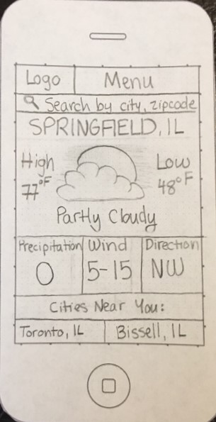

Site Purpose Statement
The purpose of this website is to inform users of various aspects of current and future weather conditions. We seek to present this data in a clear layout that is easy for the user to understand.
Audience Description
Those visiting our website will include people who are seeking information about the weather. They will want accurate information that they can obtain easily. They will use this information to prepare for the horrors of the elements.
Audience Persona
Name: Lafawnduh Dynamite
Personal Information
- 22
- Female
- Associates in Applied Math, working on Bachelors Degree
- Located in Franklin, Idaho
- Married
- Seeking to travel to Springfield, Illinois
Website Interaction
- Tends to look for weather information on her smartphone rather than her desktop
- May check the weather website multiple times a day for updated information
Interaction Purpose
- Driving from Franklin, Idaho to Springfield, Illinois in the winter and is concerned about dangerous weather conditions
- Needs accurate weather conditions in Springfield, Illinois to pack accordingly for her trip
Website Sketches
Small Screen
Medium Screen

Large Screen

Peer Review
Dustin Rowbury reviewed my webpage and suggested that I increase the white space on my large screen view. He said it would be good to shrink the size of the precipitation, wind speed and direction sections and consequently add more space between that information and the short term forecast. I agreed with Dustin that more white space on the large screen view would allow for more breathability and convenience for the user. Therefore, I adjusted my sketch to the one seen above.